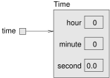
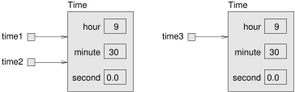

13 Designing Classes
Whenever you create a new class, you are creating a new object type with the same name. So way back in Section 1.3, when we created the class Hello, we also created an object type named Hello.
We didn’t declare any variables with type Hello, and we didn’t use new to create Hello objects. And it wouldn’t have done much good if we had—but we could have!
In this chapter, you will learn to design classes that represent useful objects. Here are the main ideas:
Again, defining a class creates a new object type with the same name.
A class definition is a template for objects: it specifies what attributes the objects have and what methods can operate on them.
Every object belongs to an object type; that is, it is an instance of a class.
The
newoperator instantiates objects; that is, it creates new instances of a class.
Think of a class as a blueprint for a house: you can use the same blueprint to build any number of houses.
13.1 The Time Class
A common reason to define a new class is to encapsulate related data in an object that can be treated as a single unit. That way, we can use objects as parameters and return values, rather than passing and returning multiple values. You have already seen two types that encapsulate data in this way: Point and Rectangle.
Another example, which we will implement ourselves, is Time, which represents a time of day. The data encapsulated in a Time object includes an hour, a minute, and a number of seconds. Because every Time object contains these values, we define attributes to hold them.
Attributes are also called instance variables, because each instance has its own variables (as opposed to “class variables”, coming up in Section 12.3).
The first step is to decide what type each variable should be. It seems clear that hour and minute should be integers. Just to keep things interesting, let’s make second a double.
Instance variables are declared at the beginning of the class definition, outside any method. By itself, this code fragment is a legal class definition:
public class Time {
private int hour;
private int minute;
private double second;
}The Time class is public, which means that it can be used in other classes. But the instance variables are private, which means they can be accessed only from inside the Time class. If you try to read or write them from another class, you will get a compiler error.
Private instance variables help keep classes isolated from each other, so that changes in one class won’t require changes in other classes. It also simplifies what other programmers need to know to use your classes. This kind of isolation is called information hiding.
13.2 Constructors
After declaring instance variables, the next step is to define a constructor, which is a special method that initializes the object. The syntax for constructors is similar to that of other methods, except for the following:
The name of the constructor is the same as the name of the class.
Constructors have no return type (and no return value).
The keyword
staticis omitted.
Here is an example constructor for the Time class:
public Time() {
this.hour = 0;
this.minute = 0;
this.second = 0.0;
}This constructor does not take any arguments. Each line initializes an instance variable to 0 (which is midnight for a Time object).
The name this is a keyword that refers to the object we are creating. You can use this the same way you use the name of any other object. For example, you can read and write the instance variables of this, and you can pass this as an argument to other methods. But you do not declare this, and you can’t make an assignment to it.
A common error when writing constructors is to put a return statement at the end. Like void methods, constructors do not return values.
To create a Time object, you must use the new operator:
public static void main(String[] args) {
Time time = new Time();
}When you use new, Java creates the object and invokes your constructor to initialize the instance variables. When the constructor is done, new returns a reference to the new object. In this example, the reference gets assigned to the variable time, which has type Time. Figure 11.1 shows the result.

Time object.
Beginners sometimes make the mistake of using new in the constructor:
public Time() {
new Time(); // StackOverflowError
this.hour = 0;
this.minute = 0;
this.second = 0.0;
}Doing so causes an infinite recursion, since new invokes the same constructor, which uses new again, which invokes the constructor again, and so on.
13.3 Value Constructors
Like other methods, constructors can be overloaded, which means you can provide multiple constructors with different parameters. Java knows which constructor to invoke by matching the arguments you provide with the parameters of the constructor.
It is common to provide both a “default constructor” that takes no arguments, like the previous one, and a “value constructor”, like this one:
public Time(int hour, int minute, double second) {
this.hour = hour;
this.minute = minute;
this.second = second;
}To invoke this constructor, you have to provide arguments to the new operator. The following example creates a Time object that represents a fraction of a second before noon:
Time time = new Time(11, 59, 59.9);Overloading constructors provides the flexibility to create an object first and then fill in the attributes, or collect all the information before creating the object itself.
Once you get the hang of it, writing constructors gets boring. You can write them quickly just by looking at the list of instance variables. In fact, some IDEs can generate them for you.
Here is the complete class definition so far:
public class Time {
private int hour;
private int minute;
private double second;
public Time() {
this.hour = 0;
this.minute = 0;
this.second = 0.0;
}
public Time(int hour, int minute, double second) {
this.hour = hour;
this.minute = minute;
this.second = second;
}
}Notice how the second constructor declares the parameters hour, minute, and second. Java allows you to declare parameters (and local variables) with the same names as instance variables. They don’t have to use the same names, but it’s common practice.
The right side of this.hour = hour; refers to the parameter hour, since it was declared most recently. This situation is called shadowing, because the parameter “hides” the instance variable with the same name.
Java provides the keyword this so you can access instance variables, regardless of shadowing. As a result, this constructor copies the values from the parameters to the instance variables.
13.4 Getters and Setters
Recall that the instance variables of Time are private. We can access them from within the Time class, but if we try to read or write them from another class, the compiler reports an error.
A class that uses objects defined in another class is called a client. For example, here is a new class called TimeClient:
public class TimeClient {
public static void main(String[] args) {
Time time = new Time(11, 59, 59.9);
System.out.println(time.hour); // compiler error
}
}If you compile this code, you get an error message like “hour has private access in Time”. There are three ways to solve this problem:
Make the instance variables public.
Provide methods to access the instance variables.
Decide that it’s not a problem and refuse to let other classes access the instance variables.
The first choice is appealing because it’s simple. But here is the problem: when class \(A\) accesses the instance variables of class \(B\) directly, \(A\) becomes dependent on \(B\). If anything in \(B\) changes later, it is likely that \(A\) will have to change too.
But if \(A\) uses only methods to interact with \(B\), \(A\) and \(B\) are less dependent, which means that we can make changes in \(B\) without affecting \(A\) (as long as we don’t change the method parameters). So we generally avoid making instance variables public.
The second option is to provide methods that access the instance variables. For example, we might want the instance variables to be “read only”; that is, code in other classes should be able to read them but not write them. We can do that by providing one method for each instance variable:
public int getHour() {
return this.hour;
}
public int getMinute() {
return this.minute;
}
public double getSecond() {
return this.second;
}Methods like these are formally called “accessors”, but more commonly referred to as getters. By convention, the method that gets a variable named something is called getSomething.
We can fix the compiler error in TimeClient by using the getter:
System.out.println(time.getHour());If we decide that TimeClient should also be able to modify the instance variables of Time, we can provide methods to do that too:
public void setHour(int hour) {
this.hour = hour;
}
public void setMinute(int minute) {
this.minute = minute;
}
public void setSecond(double second) {
this.second = second;
}These methods are formally called “mutators”, but more commonly known as setters. The naming convention is similar; the method that sets something is usually called setSomething.
Writing getters and setters can get boring, but many IDEs can generate them for you based on the instance variables.
13.5 Displaying Objects
To display Time objects, we can write a method to display the hour, minute, and second. Using printTime in Section 4.4 as a starting point, we could write the following:
public static void printTime(Time t) {
System.out.print(t.hour);
System.out.print(":");
System.out.print(t.minute);
System.out.print(":");
System.out.println(t.second);
}The output of this method, given the time object from the first example, would be 11:59:59.9. We can use printf to make the code more concise:
public static void printTime(Time t) {
System.out.printf("%02d:%02d:%04.1f\n",
t.hour, t.minute, t.second);
}As a reminder, you need to use \%d with integers, and \%f with floating-point numbers. The 02 option means “total width 2, with leading zeros if necessary”, and the 04.1 option means “total width 4, one digit after the decimal point, leading zeros if necessary”. The output is the same: 11:59:59.9.
There’s nothing wrong with a method like printTime, but it is not consistent with object-oriented style. A more idiomatic solution is to provide a special method called toString.
13.6 The toString Method
Every object has a method called toString that returns a string representation of the object. When you display an object using print or println, Java invokes the object’s toString method.
By default, it simply displays the type of the object and its address in hexadecimal. So, say you create a Time object and display it with println:
public static void main(String[] args) {
Time time = new Time(11, 59, 59.9);
System.out.println(time);
}The output looks something like this:
Time@80cc7c0This address can be useful for debugging, if you want to keep track of individual objects.
But you can override this behavior by providing your own toString method. For example, here is a toString method for Time:
public String toString() {
return String.format("%02d:%02d:%04.1f\n",
this.hour, this.minute, this.second);
}The definition does not have the keyword static, because it is not a static method. It is an instance method, so called because when you invoke it, you invoke it on an instance of the class. Instance methods are sometimes called “non-static”; you might see this term in an error message.
The body of the method is similar to printTime in the previous section, with two changes:
Inside the method, we use
thisto refer to the current instance; that is, the object the method is invoked on.Instead of
printf, it usesString.format, which returns a formattedStringrather than displaying it.
Now you can call toString directly:
Time time = new Time(11, 59, 59.9);
String s = time.toString();The value of s is the string "11:59:59.9". You can also invoke toString indirectly by invoking print or println:
System.out.println(time);This code displays the string "11:59:59.9". Either way, when you use this inside toString, it refers to the same object as time.
13.7 The equals Method
We have seen two ways to check whether values are equal: the == operator and the equals method. With objects, you can use either one, but they are not the same:
The
==operator checks whether two references are identical; that is, whether they refer to the same object.The
equalsmethod checks whether two objects are equivalent; that is, whether they have the same values.
The definition of identity is always the same, so the == operator always does the same thing. But the definition of equivalence is different for different objects, so objects can define their own equals methods.
Consider the following variables and the corresponding memory diagram in Figure 11.2:
Time time1 = new Time(9, 30, 0.0);
Time time2 = time1;
Time time3 = new Time(9, 30, 0.0);
Time variables.
The assignment operator copies references, so time1 and time2 refer to the same object. Because they are identical, time1 == time2 is true. But time1 and time3 refer to two different objects. Because they are not identical, time1 == time3 is false.
By default, the equals method does the same thing as ==. For Time objects, that’s probably not what we want. For example, time1 and time3 represent the same time of day, so we should consider them equivalent.
We can provide an equals method that implements this idea:
public boolean equals(Time that) {
final double DELTA = 0.001;
return this.hour == that.hour
&& this.minute == that.minute
&& Math.abs(this.second - that.second) < DELTA;
}equals is an instance method, so it doesn’t have the keyword static. It uses this to refer to the current object, and that to refer to the other. that is not a keyword, so we could have given this parameter a different name. But using that makes the code nicely readable.
We can invoke equals like this:
time1.equals(time3);Inside the equals method, this refers to the same object as time1, and that refers to the same object as time3. Since their instance variables are “equal”, the result is true.
Because hour and minute are integers, we compare them with ==. But second is a floating-point number. Because of rounding errors, it is not good to compare floating-point numbers with == (see Section 2.7). Instead, we check whether the difference is smaller than a threshold, DELTA.
Many objects have a similar notion of equivalence; that is, two objects are considered equal if their instance variables are equal. But other definitions are possible.
13.8 Adding Times
Suppose you are going to a movie that starts at 18:50 (that is, 6:50 PM), and the running time is 2 hours, 16 minutes. What time does the movie end? We’ll use Time objects to figure it out:
Time startTime = new Time(18, 50, 0.0);
Time runningTime = new Time(2, 16, 0.0);Here are two ways we could “add” the Time objects:
Write a static method that takes two
Timeobjects as parameters.Write an instance method that gets invoked on one object and takes the other as a parameter.
To demonstrate the difference, we’ll do both. Here is the static method:
public static Time add(Time t1, Time t2) {
Time sum = new Time();
sum.hour = t1.hour + t2.hour;
sum.minute = t1.minute + t2.minute;
sum.second = t1.second + t2.second;
return sum;
}And here’s how we would invoke it:
Time endTime = Time.add(startTime, runningTime);Here’s what it looks like as an instance method:
public Time add(Time t2) {
Time sum = new Time();
sum.hour = this.hour + t2.hour;
sum.minute = this.minute + t2.minute;
sum.second = this.second + t2.second;
return sum;
}And here’s how we would invoke it:
Time endTime = startTime.add(runningTime);Notice the differences:
The static method has the keyword
static; the instance method does not.The static method has two parameters,
t1andt2. The instance method has one explicit parameter,t2, and the implicit parameter,this.We invoked the static method with the
Timeclass; we invoked the instance method with thestartTimeobject.
That’s all there is to it. Static methods and instance methods do the same thing, and you can convert from one to the other with just a few changes.
However, there’s a problem with both of these methods; they are not correct. The result from either method is 20:66, which is not a valid time.
If second exceeds 59, we have to carry into the minutes column, and if minute exceeds 59, we have to carry into hour.
Here is a better version of the instance method, add:
public Time add(Time t2) {
Time sum = new Time();
sum.hour = this.hour + t2.hour;
sum.minute = this.minute + t2.minute;
sum.second = this.second + t2.second;
if (sum.second >= 60.0) {
sum.second -= 60.0;
sum.minute += 1;
}
if (sum.minute >= 60) {
sum.minute -= 60;
sum.hour += 1;
}
if (sum.hour >= 24) {
sum.hour -= 24;
}
return sum;
}If hour exceeds 23, we subtract 24 hours, but there’s no days attribute to carry into.
13.9 Vocabulary
- class:
-
In Chapter 1, we defined a class as a collection of related methods. Now you know that a class is also a template for a new type of object.
- instance:
-
A member of a class. Every object is an instance of a class.
- instantiate:
-
Create a new instance of a class in the computer’s memory.
- instance variable:
-
An attribute of an object; a non-static variable defined at the class level.
- information hiding:
-
The practice of making instance variables
privateto limit dependencies between classes. - constructor:
-
A special method that initializes the instance variables of a newly constructed object.
- shadowing:
-
Occurs when a local variable or parameter has the same name as an attribute.
- client:
-
A class that uses objects defined in another class.
- getter:
-
A method that returns the value of an instance variable.
- setter:
-
A method that assigns a value to an instance variable.
- override:
-
To replace a default implementation of a method, such as
toString. - instance method:
-
A non-static method that has access to
thisand the instance variables. - identical:
-
References to the same object (at the same location in memory).
- equivalent:
-
Objects that are equal in value, as defined by the
equalsmethod.
13.10 Exercises
The code for this chapter is in the ch11 directory of ThinkJavaCode2. See page for instructions on how to download the repository. Before you start the exercises, we recommend that you compile and run the examples.
Exercise 11.1. The implementation of increment in this chapter is not very efficient. Can you rewrite it so it doesn’t use any loops?
**Hint:* Remember the remainder operator—it works with floating-point too.*
Exercise 11.2. In the board game Scrabble, each tile contains a letter, which is used to spell words in rows and columns, and a score, which is used to determine the value of words. The point of this exercise is to practice the mechanical part of creating a new class definition:
Write a definition for a class named
Tilethat represents Scrabble tiles. The instance variables should include a character namedletterand an integer namedvalue.Write a constructor that takes parameters named
letterandvalue, and initializes the instance variables.Write a method named
printTilethat takes aTileobject as a parameter and displays the instance variables in a reader-friendly format.Write a
mainmethod that creates aTileobject with the letterZand the value10, and then usesprintTileto display the state of the object.Implement the
toStringandequalsmethods for aTile.Create getters and setters for each of the attributes.
Exercise 11.3. Write a class definition for Date, an object type that contains three integers: year, month, and day. This class should provide two constructors. The first should take no parameters and initialize a default date. The second should take parameters named year, month and day, and use them to initialize the instance variables.
Write a main method that creates a new Date object named birthday. The new object should contain your birth date. You can use either constructor.
Exercise 11.4. A “rational number” is a number that can be represented as the ratio of two integers. For example, \(2/3\) is a rational number, and you can think of 7 as a rational number with an implicit 1 in the denominator.
The purpose of this exercise is to write a class definition that includes a variety of methods, including constructors, static methods, instance methods, modifiers, and pure methods:
Define a class called
Rational. ARationalobject should have two integer instance variables that store the numerator and denominator.Write a constructor that takes no arguments and sets the numerator to
0and denominator to1.Write an instance method called
printRationalthat displays aRationalobject in a reasonable format.Write a
mainmethod that creates a new object with typeRational, sets its instance variables to the values of your choice, and displays the object.You now have a minimal testable program. Test it and, if necessary, debug it.
Write a
toStringmethod forRationaland test it usingprintln.Write a second constructor that takes two arguments and uses them to initialize the instance variables.
Write an instance method called
negatethat reverses the sign of a rational number. This method should be a modifier, so it should bevoid. Add lines tomainto test the new method.Write an instance method called
invertthat swaps the numerator and denominator. It should be a modifier. Add lines tomainto test the new method.Write an instance method called
toDoublethat converts the rational number to adouble(floating-point number) and returns the result. This method is a pure method; it does not modify the object. As always, test the new method.Write an instance method named
reducethat reduces a rational number to its lowest terms by finding the greatest common divisor (GCD) of the numerator and denominator and dividing through. This method should be a pure method; it should not modify the instance variables of the object on which it is invoked.**Hint:* Finding the GCD takes only a few lines of code. Search the web for “Euclidean algorithm”.*
Write an instance method called
addthat takes aRationalnumber as an argument, adds it tothis, and returns a newRationalobject. There are several ways to add fractions. You can use any one you want, but you should make sure that the result of the operation is reduced so that the numerator and denominator have no common divisor (other than 1).